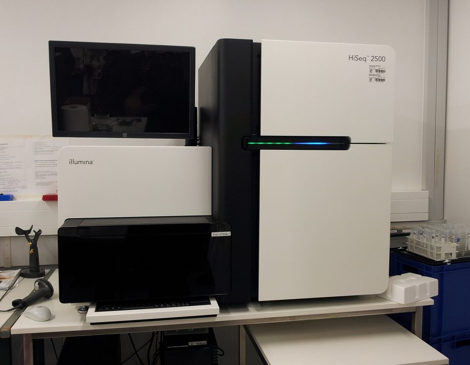
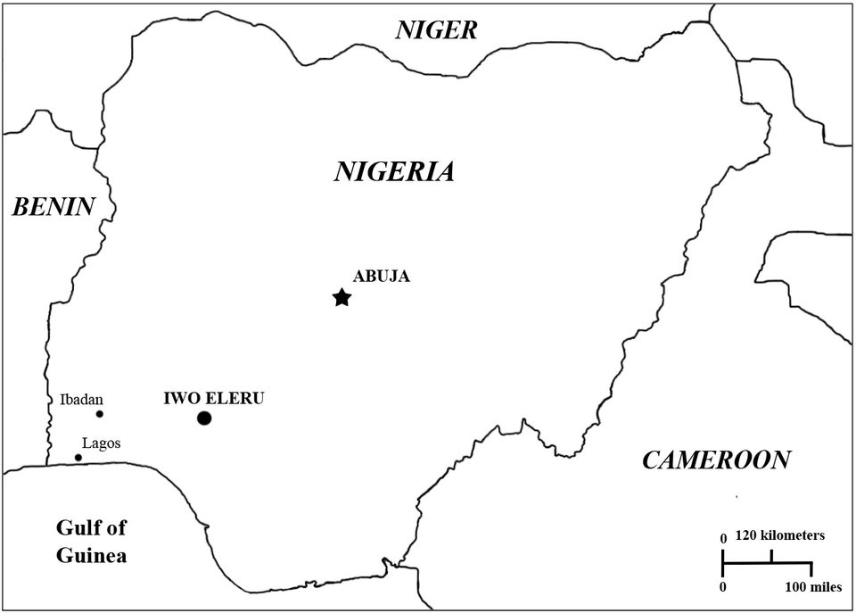
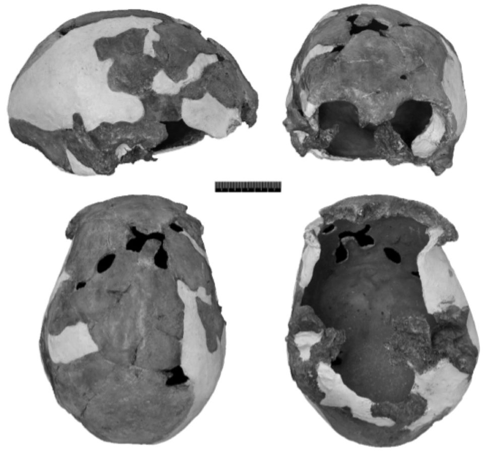
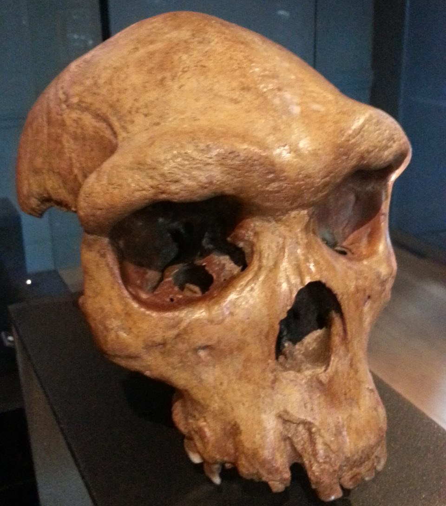
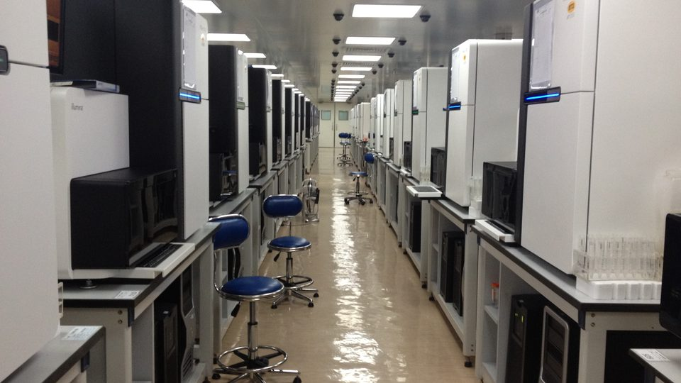

O DNA fantasma da África Ocidental — um parente sem osso
Não há crânio, dente nem pedaço de dedo. Há um padrão em genomas de gente viva, que um modelo estatístico atribuiu, em 2020, a uma linhagem humana separada da nossa há centenas de milhares de anos. Três anos depois, outro modelo explicou o mesmo padrão sem ela. A pergunta deste dossiê não é quem era o fantasma: é se ele existiu como grupo à parte.
- Onde
- África Ocidental — amostras iorubás, esãs, mendes e gambianas
- Estudo-chave
- Science Advances, fevereiro de 2020
- Fração estimada
- 2% a 19%, conforme o grupo e a margem
- Separação estimada
- ≈ 360 mil a 1,02 milhão de anos
- Mistura estimada
- ≈ 43 mil anos (margem de 6 mil a 124 mil)
- Fóssil associado
- nenhum
Os neandertais foram descritos a partir de ossos em 1856, e só em 2010 se soube que deixaram DNA em quase todo mundo fora da África. Os denisovanos fizeram o caminho inverso: primeiro o genoma, tirado de uma falange em 2010, e depois, aos poucos, os fósseis. O caso deste dossiê vai um passo além. Não há osso nenhum para sequenciar. O que existe é uma assinatura deixada no genoma de populações vivas, lida por estatística, e uma discussão honesta sobre o que essa assinatura quer dizer.
Antes de começar, uma observação de linguagem que vale para o texto inteiro. Em genética, "arcaico" descreve uma linhagem que se separou cedo da que deu origem aos humanos de hoje. Não é escala de valor, não descreve aparência de ninguém e não diz nada sobre capacidades. Todos os humanos atuais carregam alguma ancestralidade de linhagens assim; o que muda de uma população para outra é qual, quanto e quando. E os nomes das populações — iorubá, mende — são rótulos de onde vieram os voluntários que doaram amostras, não fronteiras biológicas.

01O sinal de 2020
Em fevereiro de 2020, Arun Durvasula e Sriram Sankararaman, da Universidade da Califórnia em Los Angeles, publicaram na Science Advances um trabalho com um título direto: recuperar sinais de introgressão arcaica "fantasma" em populações africanas. Introgressão é a entrada de DNA de uma linhagem em outra por cruzamento. "Fantasma" é o termo técnico para uma população que aparece no modelo mas da qual não existe amostra — nem genoma antigo, nem fóssil identificado.
Os dados eram públicos: genomas de quatro populações da África Ocidental sequenciados pelo projeto 1000 Genomes — iorubás de Ibadan e esãs, na Nigéria; mendes, em Serra Leoa; e gambianos. Para comparação, os genomas de alta qualidade de neandertais e de um denisovano.
O resultado: o padrão de variação desses genomas se ajustava melhor a um modelo em que, além da história humana já conhecida, havia uma contribuição de uma linhagem que se separou da nossa antes da separação entre humanos modernos e neandertais. Nas quatro populações, as margens de 95% iam de 2% a 19% de ancestralidade dessa linhagem. No grupo iorubá, a estimativa central era de 11%. A separação ficava, conforme a população, entre cerca de 360 mil e um milhão de anos atrás, com estimativa central de 625 mil anos para os iorubás. E a mistura teria acontecido relativamente tarde: por volta de 43 mil anos atrás no modelo iorubá, com margem que vai de 6 mil a 124 mil anos.
Os autores foram além da porcentagem: com um segundo método, mapearam trechos do genoma de iorubás e mendes com cara de origem arcaica. Alguns aparecem em frequência alta — perto de genes ligados à supressão de tumores e à regulação de hormônios, por exemplo —, e foram apontados como candidatos a introgressão adaptativa, quando um trecho herdado se espalha porque ajudou quem o carregava. Candidatos: nenhuma vantagem foi demonstrada.
02Como se acha um parente sem fóssil
Com neandertais e denisovanos, a lógica é comparar: pega-se um trecho de DNA de uma pessoa viva e vê-se se ele se parece mais com o genoma arcaico sequenciado do que com o de outros humanos. Para o fantasma não há genoma de referência. O método precisa reconhecer DNA arcaico pelo que ele tem de estranho, não pelo que tem de parecido com algo conhecido.
A ferramenta central do estudo de 2020 é um tipo de contagem chamada espectro de frequência condicionado. Em linguagem simples: entre as variantes genéticas que o neandertal também tem, observa-se com que frequência elas aparecem na população africana. Se a história fosse só a conhecida, a distribuição teria uma forma; se houve entrada de DNA de uma linhagem muito antiga, aparece um excesso característico de variantes em certas frequências. O modelo testa milhares de cenários simulados e fica com os que reproduzem melhor a forma observada.
O segundo método procura, trecho por trecho, sinais típicos de herança arcaica: segmentos longos com muitas variantes que não aparecem em outros humanos, e uma divergência alta em relação ao resto da população. É o tipo de abordagem que funciona sem referência — e que, por isso mesmo, depende muito de o modelo de fundo estar certo.
03Não foi o primeiro sinal
O estudo de 2020 é o mais citado, mas a ideia de mistura arcaica dentro da África é mais antiga, e cada trabalho usou dados e populações diferentes:
- 2011 — Hammer e colegas, na PNAS. Com 61 regiões não codificantes de mandingas, biakas e sãs, estimaram cerca de 2% de material de uma linhagem separada há uns 700 mil anos, entrado por volta de 35 mil anos atrás. Um trecho no cromossomo 4 foi apontado como possível herança de um grupo extinto da África central.
- 2012 — Lachance e colegas, na Cell. Com genomas completos de caçadores-coletores — hadzas, sandawes e pigmeus do oeste da África central —, encontraram blocos muito divergentes compatíveis com mistura arcaica.
- 2019 — Lorente-Galdos e colegas, na Genome Biology. Com 21 genomas de 15 populações africanas, modelaram uma contribuição de cerca de 4% a 6% de uma linhagem "moderna basal" extinta — 5,8% nos mandingas.
- 2020 — Lipson e colegas, na Nature. O primeiro DNA antigo da região, de quatro crianças enterradas em Shum Laka, nos Camarões, há cerca de 8 mil e 3 mil anos. O modelo que resultou para a história africana tem várias linhagens profundas, incluindo uma "fantasma moderna" e uma pequena contribuição arcaica na ancestralidade da África Ocidental.
O que essa lista mostra é convergência e divergência ao mesmo tempo. Vários grupos, com métodos diferentes, acham algo profundo e estranho na variação africana. Mas eles não concordam sobre o que é: uma linhagem "arcaica", separada antes dos neandertais; uma linhagem "moderna basal", separada depois; uma ou várias. A porcentagem muda conforme a pergunta que o modelo faz.
04A outra explicação: um tronco com vários galhos
Em maio de 2023, Aaron Ragsdale, Simon Gravel, Brenna Henn e colegas publicaram na Nature um modelo diferente para a origem humana na África. Usaram genomas de populações do sul, do leste e do oeste do continente — incluindo 44 genomas novos de namas, da África do Sul, e genomas de mendes, de Serra Leoa — e um tipo de estatística que olha para como as variantes vizinhas no cromossomo tendem a ser herdadas juntas.
O modelo que melhor se ajustou não tinha um fantasma. Tinha um tronco fracamente estruturado: dois ou mais grupos humanos ancestrais, pouco diferentes entre si, que viveram em partes distintas da África durante centenas de milhares de anos, trocando migrantes o tempo todo. A primeira separação entre as populações atuais aparece entre 120 mil e 135 mil anos atrás. E os autores escrevem, com todas as letras, que modelos assim explicam padrões que antes tinham sido atribuídos a contribuições de hominíneos arcaicos na África.
A diferença entre as duas explicações não é só técnica; ela faz uma previsão sobre o que deveria existir no chão. Se houve um fantasma arcaico, deveria aparecer um dia um fóssil de um grupo bem diferente, contemporâneo dos humanos modernos. Se a explicação é o tronco estruturado, os fósseis dos grupos ancestrais coexistentes deveriam ser parecidos entre si, genética e anatomicamente — variações de um mesmo tema, e não outra espécie.
O trabalho de 2023 não prova que não houve mistura arcaica; mostra que ela não é necessária para explicar os dados que analisou. E outros grupos continuaram achando estrutura profunda por outros caminhos. Em março de 2025, Trevor Cousins, Aylwyn Scally e Richard Durbin, de Cambridge, descreveram na Nature Genetics duas populações ancestrais que se separaram há cerca de 1,5 milhão de anos e voltaram a se juntar há uns 300 mil, numa proporção de 80 para 20 — uma história que vale para todos os humanos atuais, não para uma região.
05Os ossos que existem
Se a genética fala de populações que nunca foram vistas, a paleontologia africana tem o problema oposto: fósseis que não se encaixam bem em lugar nenhum, e quase nenhum DNA para conferir. O clima tropical destrói material genético antigo. O DNA mais antigo da África Ocidental e central tem cerca de 8 mil anos — o de Shum Laka.
O caso mais citado ao lado do sinal fantasma é o de Iwo Eleru, no sudoeste da Nigéria. O nome, em iorubá, quer dizer "caverna das cinzas", por causa da camada espessa deixada por fogueiras. Em 1965, o arqueólogo Thurstan Shaw escavou ali, perto da aldeia de Isarun, no estado de Ondo, um sepultamento associado a ferramentas da Idade da Pedra Tardia. A datação por radiocarbono do contexto apontou cerca de 11 mil anos.

Em 2011, Katerina Harvati, Chris Stringer e colegas reexaminaram o crânio com morfometria tridimensional e redataram um fragmento de osso longo por séries de urânio: entre 11,7 mil e 16,3 mil anos. A forma da caixa craniana ficou mais próxima de fósseis africanos arcaicos do Pleistoceno Superior do que dos humanos atuais — intermediária, segundo os autores. É um indivíduo do fim da Idade do Gelo com traços que, por um esquema simples, deveriam ter desaparecido muito antes.

Os autores de 2011 leram o crânio como sinal de estrutura profunda das populações africanas e de uma origem do humano moderno mais complicada do que um ponto único no mapa. Repare que essa leitura serve às duas explicações genéticas: um sobrevivente de uma linhagem arcaica, ou um extremo da variação dentro de um tronco estruturado. Iwo Eleru não decide a disputa. Mostra que ela tem corpo.
Mais para trás no tempo, a África tem outros indícios de que várias formas humanas conviveram. O crânio de Kabwe, achado em 1921 numa mina da atual Zâmbia, foi datado em 2020 em cerca de 299 mil anos — a mesma época dos fósseis de Jebel Irhoud, no Marrocos, com cerca de 315 mil anos, que estão entre os mais antigos atribuídos à linhagem do Homo sapiens. Na África do Sul, o Homo naledi, de cérebro pequeno, viveu entre 335 mil e 236 mil anos atrás.

Nenhum desses fósseis tem DNA. Por isso a ligação entre "o grupo que a estatística pede" e "o osso que existe" continua sendo uma questão de época e de forma, não de parentesco medido.
06O paralelo com Denisova, e onde ele para
A comparação com os denisovanos, contada no dossiê 007, é inevitável e útil, desde que se veja onde ela para. Os denisovanos também foram descobertos pelo DNA antes de terem rosto. Mas o DNA deles saiu de um osso: uma falange, datada, com genoma sequenciado. Toda a ancestralidade denisovana medida depois em populações vivas é comparada com esse genoma de referência.
O fantasma da África Ocidental não tem esse ponto de apoio. A existência dele como grupo à parte é a própria conclusão do modelo, não um dado anterior a ele. É a diferença entre reconhecer um parente numa foto de família e deduzir que alguém faltou na foto porque há uma cadeira vazia. A cadeira vazia é real; quem se sentaria nela é inferência.
07Descoberto ontem: os fantasmas de 2026
A discussão não esfriou. Pelo contrário: os métodos novos deixaram de depender de um genoma arcaico de referência, e voltaram a achar sinais de linhagens desconhecidas — agora em escala de genoma inteiro.
TRACE, na Science
No fim de julho de 2026, Yulin Zhang, Arjun Biddanda, Priya Moorjani e colegas, da Universidade da Califórnia em Berkeley, publicaram na Science um método chamado TRACE. Ele reconstrói a árvore de parentesco de cada trecho do genoma em muitas pessoas ao mesmo tempo e procura ramos anormalmente antigos, sem precisar de genoma arcaico nem de população de referência sem mistura. Aplicado ao 1000 Genomes, o método reencontrou a herança neandertal e denisovana conhecida — um teste de que funciona — e achou mais duas.
A que interessa aqui é uma linhagem fantasma que teria se separado da nossa há cerca de 800 mil anos e cruzado com humanos modernos na África antes de 50 mil anos atrás. A contribuição estimada é pequena, de 0,5% a 1% por pessoa, e aparece em quantidades parecidas dentro e fora da África — o que a faz anterior à saída do continente e comum a todos. A segunda linhagem, ainda mais antiga, teria passado DNA aos denisovanos, e só por meio deles chegou a algumas populações atuais. Os autores dizem que as datas coincidem com grupos do Pleistoceno Médio, mas que a identidade desses grupos é desconhecida.
GhostBuster, ainda em pré-print
Em abril de 2026, uma equipe de Oxford, com Hrushikesh Loya como primeiro autor e Simon Myers, Leo Speidel e Pier Francesco Palamara entre os autores, divulgou como pré-print, ainda sem revisão por pares, um método chamado GhostBuster. Entre 300 mil e um milhão de anos atrás, ele encontra duas linhagens ancestrais profundamente divergentes, com padrões de recombinação diferentes, que teriam se misturado para formar tanto os neandertais quanto os humanos modernos.

08O que é dado e o que é interpretação
É a distinção que mais se perde quando o assunto vira manchete — e, neste tema, a manchete costuma ser "africanos têm DNA de espécie desconhecida", que mistura as duas coisas e ainda carrega uma conotação que nenhum dos estudos sustenta.
Dado
- Há variação genética profunda e incomum em populações africanas, incluindo as da África Ocidental. Vários grupos, com dados e métodos diferentes, chegam a isso desde 2011.
- Modelos simples de uma única população ancestral não explicam essa variação. Nisso, os defensores da mistura arcaica e os do tronco estruturado concordam.
- A África tinha formas humanas diversas convivendo há 300 mil anos — Kabwe, Jebel Irhoud, Homo naledi — e indivíduos de aparência arcaica até o fim da Idade do Gelo, como Iwo Eleru.
- Não há DNA antigo africano com mais de alguns milhares de anos que permita conferir diretamente nenhum desses modelos.
Interpretação
- Que a variação venha de uma linhagem arcaica distinta, separada antes dos neandertais. É a leitura de 2020; depende do modelo de fundo.
- Os números exatos — 11%, 625 mil anos, 43 mil anos. São estimativas dentro de um modelo, com margens largas, e mudam quando o modelo muda.
- Que algum fóssil conhecido seja o fantasma. Nenhum estudo genético ligou Iwo Eleru, Kabwe ou outro fóssil a essa herança.
- Que os trechos arcaicos tenham dado vantagem a quem os carrega. São candidatos estatísticos.
09As leituras, da mais sóbria à mais improvável
A história humana na África teve estrutura profunda
É o ponto em que os estudos convergem, por caminhos diferentes: espectros de frequência, desequilíbrio de ligação, árvores de parentesco, DNA antigo de Shum Laka, morfologia de fósseis. Antes de decidir se havia um "outro" grupo, já se sabe que o "nosso" grupo não era uma população única e homogênea. Isso, por si, é uma mudança grande em relação ao esquema de origem num só lugar e num só momento.
Houve mistura com uma linhagem arcaica distinta
A leitura de Durvasula e Sankararaman, e antes deles de Hammer e colegas. Tem a seu favor a repetição do sinal em estudos independentes, os testes que os autores fizeram contra explicações técnicas — erro de sequenciamento, variação na taxa de recombinação, seleção — e, agora, métodos como o TRACE, que também acham linhagens separadas há centenas de milhares de anos. Tem contra si a ausência de qualquer genoma ou fóssil associado e a demonstração de 2023 de que modelos sem mistura arcaica reproduzem o mesmo padrão.
Não houve fantasma: foi um tronco humano estruturado
A leitura de Ragsdale e colegas: grupos ancestrais pouco diferentes, ligados por migração durante centenas de milhares de anos, deixam no genoma um padrão que, visto com um modelo mais simples, parece DNA de outra linhagem. Tem a seu favor explicar vários sinais de uma vez, incluindo a variação das estimativas de datas entre estudos. Tem contra si o fato de que ajustar bem não prova exclusividade: um modelo com estrutura e um pouco de mistura arcaica pode ajustar igualmente bem, e os métodos atuais ainda têm dificuldade de separar os dois.
Iwo Eleru é o fantasma
A ideia aparece em comentários e textos de divulgação porque o fóssil está no lugar certo e tem forma arcaica. Mas não tem DNA, tem uns 13 mil anos — bem depois da estimativa central da mistura no modelo iorubá —, e a própria equipe que o redatou o leu como sinal de estrutura dentro das populações africanas, não como membro de outra linhagem. É uma coincidência sugestiva, não uma ligação.
O DNA arcaico diria algo sobre as pessoas de hoje
É a leitura que circula fora da ciência, em geral com intenção de hierarquizar populações. Nenhum dos estudos citados aqui diz nada parecido, e os dados apontam para o lado contrário: todos os humanos atuais carregam herança de linhagens antigas — neandertal, denisovana, ou as fantasmas que o TRACE encontrou dentro e fora da África. Uma fração de ancestralidade de centenas de milhares de anos é um registro de história demográfica, não uma característica de quem a carrega.
10Cronologia
- ≈ 1 milhão – 360 mil anos atrásIntervalo estimado em 2020 para a separação da linhagem fantasma, conforme a população analisada. Outros modelos põem estrutura profunda na mesma faixa.
- ≈ 335 – 236 mil anos atrásO Homo naledi vive na África do Sul.
- ≈ 315 – 299 mil anos atrásDatas dos fósseis de Jebel Irhoud, no Marrocos, e do crânio de Kabwe, na Zâmbia: formas humanas diferentes convivendo no continente.
- ≈ 135 – 120 mil anos atrásPrimeira separação entre as populações atuais, no modelo de 2023.
- ≈ 124 – 6 mil anos atrásMargem da mistura com a linhagem fantasma no modelo iorubá de 2020; estimativa central em torno de 43 mil anos.
- ≈ 16,3 – 11,7 mil anos atrásSepultamento de Iwo Eleru, no sudoeste da atual Nigéria.
- ≈ 8 mil anos atrásCrianças enterradas em Shum Laka, nos Camarões: o DNA antigo mais velho da região.
- 1921O crânio de Kabwe é achado numa mina na atual Zâmbia.
- 1965Thurstan Shaw escava o sepultamento de Iwo Eleru.
- 2010Genomas neandertal e denisovano: primeiras referências para medir herança arcaica em gente viva.
- setembro de 2011Hammer e colegas publicam na PNAS evidência de mistura arcaica em populações africanas. Harvati e colegas redatam Iwo Eleru em 11,7 a 16,3 mil anos.
- 2012Lachance e colegas encontram blocos divergentes em genomas de caçadores-coletores africanos.
- abril de 2019Lorente-Galdos e colegas modelam uma linhagem "moderna basal" extinta em populações subsaarianas.
- janeiro de 2020Lipson e colegas publicam o DNA de Shum Laka e um modelo com várias linhagens profundas na África.
- fevereiro de 2020Durvasula e Sankararaman estimam de 2% a 19% de ancestralidade fantasma arcaica em quatro populações da África Ocidental.
- maio de 2023Ragsdale e colegas propõem o tronco fracamente estruturado, que explica o sinal sem mistura arcaica.
- março de 2025Cousins, Scally e Durbin descrevem duas populações ancestrais separadas por mais de um milhão de anos e reunidas há uns 300 mil, na origem de todos os humanos atuais.
- abril de 2026Pré-print do GhostBuster, de Oxford: duas linhagens profundas na formação de neandertais e humanos modernos.
- julho – agosto de 2026TRACE, na Science: uma linhagem fantasma separada há uns 800 mil anos, com 0,5% a 1% de contribuição em todos os humanos atuais.
11O que continua em aberto
Se o fantasma foi um grupo à parte. A dúvida principal não é quem ele era, mas se a palavra "ele" se aplica. Uma linhagem arcaica distinta e um tronco humano subdividido deixam marcas parecidas, e os métodos de hoje ainda não separam bem uma da outra.
Quanto, e quando. As estimativas variam de menos de 1% a quase 20%, e de dezenas a centenas de milhares de anos, conforme o método e a pergunta. Parte dessa variação, como mostrou o trabalho de 2023, vem de usar o modelo errado — e ninguém tem certeza de qual é o certo.
Se haverá um osso. A hipótese arcaica prevê, em algum lugar, fósseis de um grupo bem diferente vivendo ao lado dos humanos modernos; a do tronco estruturado prevê fósseis variados, mas do mesmo tema. A África Ocidental é das regiões com menos fósseis humanos do continente, e cada achado novo pesa.
Se haverá DNA. Proteínas antigas, que resistem mais que o DNA, já ajudaram a identificar fósseis denisovanos. Um caminho parecido, aplicado a ossos africanos, pode ser o que finalmente põe uma cara — ou nenhuma — no fantasma.
12Fontes consultadas
Este dossiê é texto autoral. As fontes abaixo foram consultadas para apuração de datas, números e atribuições; nenhuma foi reproduzida.
- Durvasula, A.; Sankararaman, S. — Recovering signals of ghost archaic introgression in African populations. Science Advances, vol. 6, n. 7, eaax5097, 12 de fevereiro de 2020.
- Hammer, M. F.; Woerner, A. E.; Mendez, F. L.; Watkins, J. C.; Wall, J. D. — Genetic evidence for archaic admixture in Africa. PNAS, setembro de 2011.
- Lachance, J. et al. — Evolutionary history and adaptation from high-coverage whole-genome sequences of diverse African hunter-gatherers. Cell, 2012.
- Lorente-Galdos, B. et al. — Whole-genome sequence analysis of a Pan African set of samples reveals archaic gene flow from an extinct basal population of modern humans into sub-Saharan populations. Genome Biology, abril de 2019.
- Lipson, M. et al. — Ancient West African foragers in the context of African population history. Nature, janeiro de 2020.
- Ragsdale, A. P.; Weaver, T. D.; Atkinson, E. G.; Hoal, E. G.; Möller, M.; Henn, B. M.; Gravel, S. — A weakly structured stem for human origins in Africa. Nature, vol. 617, 17 de maio de 2023.
- Cousins, T.; Scally, A.; Durbin, R. — A structured coalescent model reveals deep ancestral structure shared by all modern humans. Nature Genetics, 18 de março de 2025.
- Zhang, Y.; Biddanda, A.; Johnson, S. A.; O'Dushlaine, C.; Moorjani, P. — Recovering signatures of archaic hominin introgression using ancestral recombination graphs. Science, 2026 (online em julho, edição de 27 de agosto); comunicado da Universidade da Califórnia em Berkeley, 30 de julho de 2026.
- Loya, H.; Gupta Hinch, A.; Palamara, P. F.; Speidel, L.; Myers, S. R. — Genome-wide genealogies reveal deep admixtures forming modern humans. Pré-print, bioRxiv, 17 de abril de 2026.
- Harvati, K.; Stringer, C.; Grün, R.; Aubert, M.; Allsworth-Jones, P.; Folorunso, C. A. — The Later Stone Age calvaria from Iwo Eleru, Nigeria: morphology and chronology. PLoS ONE, 15 de setembro de 2011.
- Verbetes enciclopédicos consolidados sobre Iwo Eleru, o crânio de Kabwe, Jebel Irhoud, Homo naledi e populações fantasmas em genética.